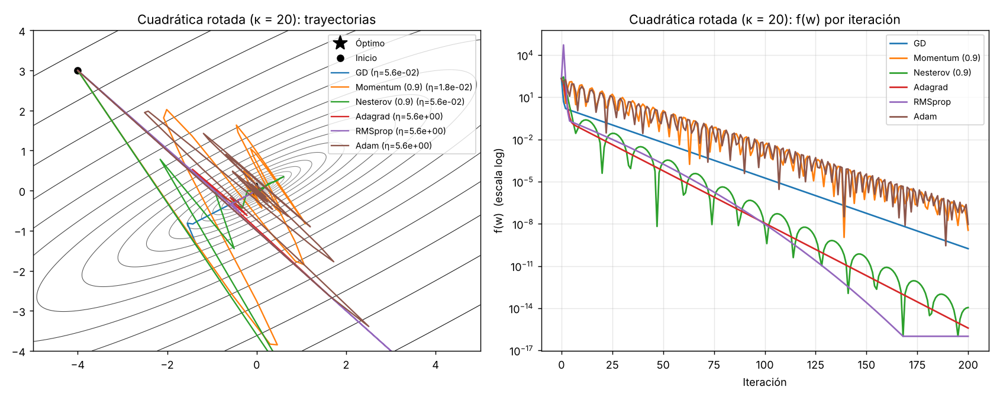
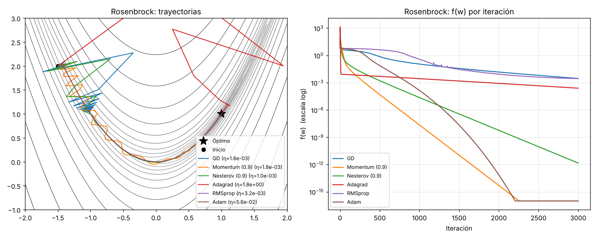

Proyecto final – MEMAD · Entrega I
El proyecto usa la clasificación de resonancias magnéticas cerebrales en cuatro clases (glioma, meningioma, tumor de hipófisis y sin tumor) como caso de estudio para analizar algoritmos de optimización. El foco no es obtener la mayor exactitud posible, sino comparar cómo distintos algoritmos minimizan la función de pérdida: velocidad de convergencia, estabilidad, sensibilidad a la tasa de aprendizaje y capacidad de generalización.
| Entrega | Metas de la semana | Entregables |
|---|---|---|
| I 9 nov |
|
|
| II 16 nov |
|
|
| III 23 nov |
|
|
| IV 30 nov |
|
|
| V 7 dic |
|
|
Si el tiempo lo permite, se añadirá un análisis del paisaje de la función de pérdida y del optimizador SAM (Foret et al., 2021) en la semana IV.
| Recurso | Enlace | Uso |
|---|---|---|
| Brain Tumor MRI Dataset (M. Nickparvar) | kaggle.com/datasets/masoudnickparvar/brain-tumor-mri-dataset | Dataset principal: 7 200 imágenes, 4 clases. |
| Fuente original: figshare (Cheng et al.) | figshare.com/articles/dataset/brain_tumor_dataset/1512427 | Incluido en el dataset principal. |
| Fuente original: SARTAJ | kaggle.com/datasets/sartajbhuvaji/brain-tumor-classification-mri | Incluido en el dataset principal. |
| Fuente original: Br35H | kaggle.com/datasets/ahmedhamada0/brain-tumor-detection | Imágenes sin tumor del dataset principal. |
| Recurso | Enlace | Uso |
|---|---|---|
ResNet-50 preentrenada en ImageNet (torchvision, pesos IMAGENET1K_V2) | pytorch.org/vision/…/torchvision.models.resnet50.html Archivo: download.pytorch.org/models/resnet50-11ad3fa6.pth | Modelo de referencia y extractor de características (semana III). |
| ResNet-18 (sin pesos preentrenados) | pytorch.org/vision/…/torchvision.models.resnet18.html | Red entrenada desde cero para comparar optimizadores. |
| Recurso | Enlace | Uso |
|---|---|---|
| Código del proyecto | github.com/gabriel73-art/DataProcessor (carpeta brain_tumor) | Todos los scripts y resultados. |
| PyTorch y torchvision | pytorch.org | Redes, diferenciación automática, optimizadores de referencia. |
| Google Colab (GPU) | colab.research.google.com | Entrenamiento. |
| SciPy | scipy.org | Referencia para L-BFGS y gradiente conjugado (semana III). |
| Optuna | optuna.org | Optimización bayesiana de hiperparámetros (semana IV). |
| Gradio | gradio.app | Aplicación web (semana V). |
Las clases están equilibradas. Del conjunto Training se separa un 15 % estratificado (semilla fija) como validación; el conjunto Testing solo se usa una vez, al final.
| Conjunto | Por clase | Total | Uso |
|---|---|---|---|
| Entrenamiento | 1 190 | 4 760 | Ajuste de los pesos. |
| Validación | 210 | 840 | Selección del mejor modelo, early stopping e hiperparámetros. |
| Prueba | 400 | 1 600 | Evaluación final. |
ResNet-50 preentrenada en ImageNet y ajustada completa, con tasas de aprendizaje discriminativas por bloque (1e-5 a 1e-3), AdamW, label smoothing 0.1, programación OneCycle y 20 épocas en GPU. Sirve como cota de referencia para lo que se logra con una red preentrenada.
| Métrica | Valor |
|---|---|
| Mejor exactitud en validación (época 18) | 99.64 % |
| Exactitud en prueba | 96.00 % |
| Real \ Predicho | glioma | meningioma | sin tumor | hipófisis | Exactitud por clase |
|---|---|---|---|---|---|
| glioma | 338 | 32 | 29 | 1 | 84.50 % |
| meningioma | 0 | 398 | 0 | 2 | 99.50 % |
| sin tumor | 0 | 0 | 400 | 0 | 100.00 % |
| hipófisis | 0 | 0 | 0 | 400 | 100.00 % |
Observaciones: (1) no hay sobreajuste clásico, ya que las curvas de entrenamiento y validación avanzan juntas; (2) 62 de los 64 errores son gliomas, lo que sugiere una diferencia de distribución entre los gliomas de Training y de Testing; (3) los 29 gliomas clasificados como "sin tumor" son falsos negativos, el error clínicamente más grave, y se analizarán en la semana IV.
Se implementaron como subclases de torch.optim.Optimizer (archivo optimizadores.py), siguiendo las ecuaciones originales:
Validación. Para cada algoritmo se entrenó la misma CNN pequeña (misma inicialización y mismos datos) durante 200 pasos con nuestra implementación y con la de PyTorch, en doble precisión.
| Optimizador | máx |θpropio − θPyTorch| | Pérdida inicial → final | Resultado |
|---|---|---|---|
| SGD | 0 | 1.5138 → 1.3860 | OK |
| SGD + momento | 0 | 1.5138 → 1.3867 | OK |
| Nesterov | 1.8 × 10⁻¹⁶ | 1.5138 → 1.3860 | OK |
| SGD + momento + L2 | 1.1 × 10⁻¹⁶ | 1.5138 → 1.3866 | OK |
| Adagrad | 0 | 1.5138 → 1.3824 | OK |
| RMSprop | 0 | 1.5138 → 1.3878 | OK |
| Adam | 1.1 × 10⁻¹⁶ | 1.5138 → 1.3907 | OK |
| Adam + L2 | 5.6 × 10⁻¹⁷ | 1.5138 → 1.3926 | OK |
| AdamW | 5.6 × 10⁻¹⁷ | 1.5138 → 1.3908 | OK |
Todas las diferencias están en el orden del error de redondeo de doble precisión (≈10⁻¹⁶). Como control, al eliminar a propósito la corrección de sesgo de Adam, la prueba falla con diferencias del orden de 10⁻², lo que confirma que la validación detecta errores reales. (La pérdida apenas baja porque los datos de la prueba son aleatorios; el objetivo aquí es solo verificar la equivalencia numérica.)
Antes de pasar a la red neuronal, se compararon los optimizadores en dos funciones clásicas: una cuadrática mal condicionada (número de condición κ = 20, rotada 30° para que los ejes no coincidan con las direcciones principales) y la función de Rosenbrock (valle curvo y estrecho, mínimo en (1, 1)). Para cada optimizador, la tasa de aprendizaje se eligió con una búsqueda en rejilla logarítmica de 25 valores entre 10⁻⁵ y 10, quedándose con la que daba el menor valor final de f. Momento y Nesterov usan μ = 0.9 y Adam los valores por defecto.


| Optimizador | Cuadrática (200 it.) | Rosenbrock (3 000 it.) | ||
|---|---|---|---|---|
| η elegida | Iter. hasta ‖w − w*‖ < 10⁻³ | η elegida | Iter. hasta ‖w − w*‖ < 10⁻³ | |
| GD | 5.6 × 10⁻² | 132 | 1.8 × 10⁻³ | no alcanza (dist. 0.12) |
| Momento (0.9) | 1.8 × 10⁻² | 139 | 1.8 × 10⁻³ | 858 |
| Nesterov (0.9) | 5.6 × 10⁻² | 47 | 1.0 × 10⁻³ | 1 573 |
| Adagrad | 5.6 | 78 | 1.8 | no alcanza (dist. 0.036) |
| RMSprop | 5.6 | 82 | 3.2 × 10⁻³ | no alcanza (dist. 0.054) |
| Adam | 5.6 | 136 | 5.6 × 10⁻² | 1 390 |
Observaciones preliminares.
| Archivo | Contenido |
|---|---|
semana1/optimizadores.py | Implementación propia de SGD, momento, Nesterov, Adagrad, RMSprop, Adam y AdamW. |
semana1/test_optimizadores.py | Validación numérica contra torch.optim. |
semana1/trayectorias_2d.py | Experimento en funciones de prueba 2D. |
semana1/resultados/ | Figuras 1 y 2 y tablas CSV de resultados. |
train_resnet50.py | Entrenamiento del modelo de referencia. |
app/ | Prototipo de la aplicación web (se completará en la semana V). |